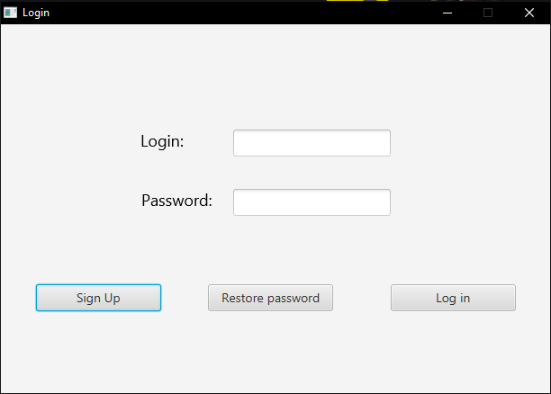

This window is the first page of this application. In it, the user can insert their username and password, and click the Log in button to be logged in the application, and access the Main Menu window. If the user has no account, they can click the Sign Up button to access the SignUp window to create an account. If the user does not remember his password, they can click the Restore Password button to access Restore Password window to get a new one.
In this is the window, the user can create a new account by inserting their data in the field, and clicking the Sign Up button. If the register is succesful, the user will be logged automaticaly and the Main Menu window will show. Clicking the Cancel button instead shows the Login window again.
In this window, the user can receive by email a new password, in case they forgot it. To do that, they must insert their email and username, and then click on the Restore My Password button.
When the user is logged, this window will show. The user can end their logged state by clicking the Log Out button. This will show the Login window again. In the superior menu, the user can log out; see the help page or the about window. They can also create a report of the routes. The center of the window has a list of routes, and with the right side buttons the user can create, edit, delete and see on a map the routes. Clicking on the Edit Profile button, the user can edit their profile after entering their password. On the map, the numbers indicate the order and the color the type. The red one is an origin, blue ones are unvisited destinations and the green ones visited destinations.
This window allows the user to change their profile data. They can change the login, email and full name. Clicking Save Changes button will then save the new data. If the user wish to change their password, first they must click the Change Password button, and enter the code they will receive in their email.
In this window, the user can create a new route by giving it a name, selecting the prefered routing options, and adding an origin and one or more destinations. To do this, the user must write the name of the place in the relevant field, and then click the adjacent Check button to get the direction. If and unwanted destination is entered, user can select it in the list and click on Delete to remove it. Optionally, an worker can be assigned to it. After setting the deadline, the user can click Save Route to save the data.
When a route is selected for editing, the user will access this window, where they can edit some of its data. A list will show the origin and destinations. If one of them is selected, See Point on Map can be clicked to show a map with the point marked in blue. If it is a visited destination, an aditional green marker will appear to signalize the point where the worker was when the destination was marked as visited. Clicking Update or Assign Route will open the Assign Route Window to change the worker assigned to the route. After the changes, clicking Save Changes will save them, if this is not wanted, the user can click Return to Main Menu to ignore them.
The Assign Route Window allows the user to change the worker assigned to this route. It also show some relevant information about the selected route. Clicking the Save Changes buttons will save the modification, and closing the window will cancel them.